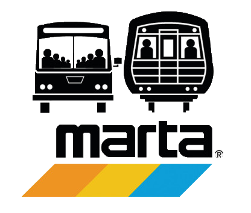

What is MARTA?
MARTA, or the Metropolitan Atlanta Rapid Transit Authority, is the city of Atlanta's public transportation system. MARTA consists of trains and buses that take citizens around the city. MARTA spans across three different counties in the Atlanta metropolitan area.
The Data
Despite Atlanta's growing population, data shows that the number of MARTA commuters has barely changed in the past 5 years. We set out to investigate why this might be. To learn more about the data sets used in this data visualization, navigate to the Data tab.
Visualization Tool
In order to investigate the experiences people have with MARTA, we created a tool that allows users to understand the most common experiences at each MARTA station while comparing that to the growth of the population around that station. In order to generate the Wordles that can be seen when clicking on a station on the map, we went through Google Map reviews for each MARTA station, and created a Wordle that shows the most common words used to describe that station. These Wordles show the experiences people have had at a particular station, and since we overlayed the MARTA train map over an Atlanta population growth map, one can easily explore reviews compared to an area's population growth rate. To check out the tool, navigate to the Visualization Tool tab.
Enter Your Experience

Have you had an experience with MARTA? If so, we want to hear from you! Fill out this form, and submit your experience. The more data we get, the more accurate this tool will be, allowing us to better inform people about MARTA.